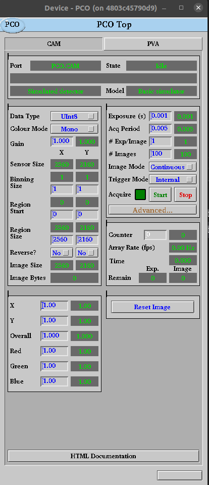

Deploy The Example IOC#
Initial Setup#
In this tutorial step we will deploy and interact with the example ioc that came with the beamline source template we used in the previous step.
For this step it is assumed that you have Kubernetes set up and kubectl installed on your workstation. Also there is an epics-iocs namespace configured and your context is setup to default into that namespace. Finally helm must also be installed.
For instructions on how to set up Kubernetes, kubectl and helm see Setup a Kubernetes Server.
To save on typing the script kube-functions.sh provides some shell functions which are simply wrappers for kubectl and helm commands. To learn about the commands take a look at the script.
Source kube-functions.sh into your shell as follows. NOTE: replace the K8S_HELM_REGISTRY reference with your account details:
# point helm at your registry
export K8S_HELM_REGISTRY=ghcr.io/<your account or organization goes here>
# get the helper functions
wget -q https://raw.githubusercontent.com/epics-containers/k8s-epics-utils/main/kube-functions.sh
source kube-functions.sh
Deploy an IOC Version#
In the previous tutorial we pushed tag 0.1 to <your account or organization>/bl01t and this generated a helm chart at ghcr.io/<your account or organization> with tags 0.1 and latest.
To deploy the helm chart into your cluster:
k8s-ioc deploy example 0.1
It may take a while for the first launch because Kubernetes needs to pull the generic IOC image from the repository. The following command will give details of the resources associated with the example IOC:
k8s-ioc list example
When the output looks like this, your IOC is running:
NAME READY STATUS RESTARTS AGE
pod/example-6779d4dcf-g2cpm 1/1 Running 0 50s
NAME READY UP-TO-DATE AVAILABLE AGE
deployment.apps/example 1/1 1 1 50s
NAME DESIRED CURRENT READY AGE
replicaset.apps/example-6779d4dcf 1 1 1 50s
Launching a GUI to interact with your IOC#
OPI screens are outside of the scope of this project for the moment see Why no mention of Operator Interfaces?.
However to make this example usable we have supplied some edm screens and will use a local edm container to display these. For this purpose you will require docker (or podman) installed on your workstation and your user will need to be in the docker group.
See here https://docs.docker.com/engine/install/ for instructions for installing docker.
To launch the GUI for the example IOC:
cd to the root of the project you created in Deploy The Example IOC, then:
./opi/stexample-gui.sh
The IOC is a simulated detector with a PVA plugin. It will be possible to run a PVA viewer to see the output of this IOC.
The main screen of the edm OPI should look like this.
Learning about Helm and Kubernetes Manifests#
It is instructive to see what helm is doing when you deploy the example IOC.
Helm uses templates to generate a set of YAML resources and applies them to the cluster using kubectl.
We are using a helm library defined in epics-containers/helm-ioc-lib. You can see the templates it is using in its templates folder.
The example ioc folder itself has a templates folder containing the ioc.yaml template. This includes all of the templates from helm-ioc-lib and also generates a ConfigMap resource from the files in the config folder.
To see the YAML that helm is generating you can use the following commands:
cd to the root of the project you created in Deploy The Example IOC, then:
helm dependency update iocs/example/
helm template example iocs/example
This is using the helm chart in your local filesystem rather than the one that we pushed to the registry so this is useful for your inner dev loop testing. You can also deploy directly from the local copy with this command:
helm upgrade --install example iocs/example
This is recommended for testing only since you won’t easily be able to track versions deployed in this way.